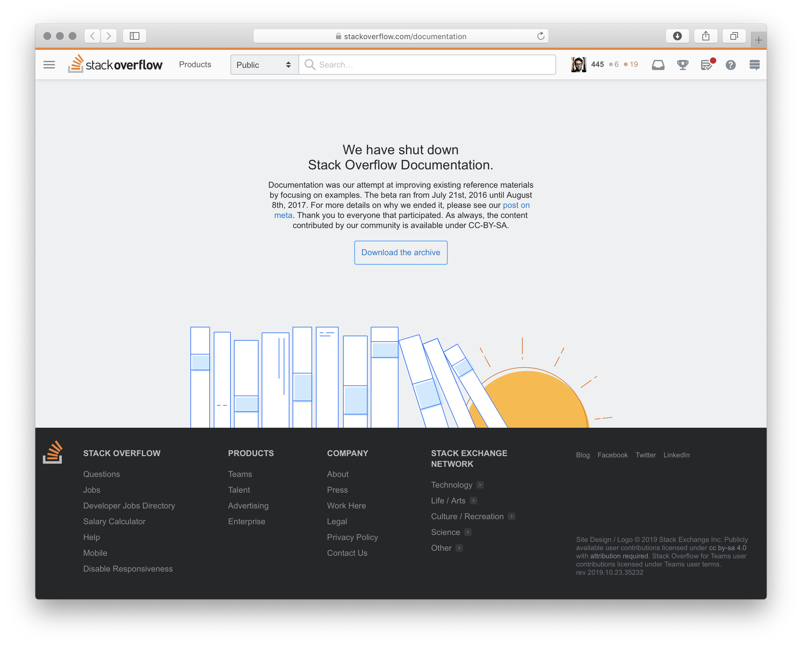
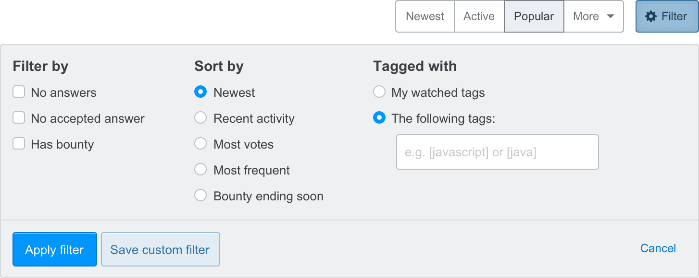

I joined Stack Overflow in the spring of 2017 as a product designer on their then in-beta product, Documentation. After that, I worked on various Q&A efforts. Eventually, I’d create and maintain their design system, Stacks.
Documentation was Stack Overflow’s attempt to improve technical reference materials by focusing on real world examples. Instead of simply documenting an API’s methods and parameters, Stack Overflow users could submit real-world examples of those APIs in use, each attempting to create the canonical example and gaining reputation for doing so. Just like answers to questions, examples could be upvoted—the best ones rising to the top.
At the time, I was coming off having written Hum, an iOS app for songwriting. Apple has amazing APIs in their iOS SDK, but many of their symbols lack official documentation. Additionally, this documentation fails to include rich examples, especially community-created examples to show how these methods are actually used. On top of an overall lack of documentation, the APIs often were half-implemented, and required workarounds found deep within Stack Overflow’s question base.
Documentation was an initial success. However, after the gold rush of early adopters adding their own canonical examples, usage began to decline. Myself, product manager Vasudha, and research intern Horyun, were tasked with figuring out how to build the next phase of Documentation.
This meant doing basic research about what Documentation should be, who it’d be for, and what people expected Stack Overflow’s version of Documentation would be. Horyun wrote in depth about her research methodology, and her time at Stack Overflow.
After initial rounds of research, we needed to test actual visuals of what this new version of Documentation might look like.
We then moved on to testing mock layouts using pseudo documentation to gather what users valued from documentation around the web.
These explorations all tested very well, but ultimately it would have been too much investment to build what Documentation truly required to succeed. The failure of Documentation changed Stack Overflow’s approach to product development across the company, moving beyond “let’s develop a new product and see how it goes” and into more robust research into product and market fit.
Q&A being the bread and butter of Stack Overflow, I was delighted to be invited to move over to the Community team after Documentation was shuttered.
Since we weren’t building a new product, there were lots of opportunities for improvements, big and small. We discovered new ways of watching tags, filtering questions, making new users feel welcomed, and how to market our products.
Though most users end up on Stack Overflow by directly searching for their problem on Google, many of our users browse our questions lists based on their interests. The community team needed a way to introduce robust sorting, filtering, while showing power users the algorithm behind pre-baked lists like “Newest” or “Active”.
Ultimately, a much simpler approach pitched by Lisa Park was best. We shipped a combined, Yelp-y set of filters and sorts in a single expandable view.
A powerful feature for those who browse Stack Overflow is watching tags. By watching tags, we weight questions in those tags and move them to the top of the lists. You can also receive an email digest of questions within those tags in varying frequency. We wanted to help surface its functionality.
After launching our code of conduct, we needed a way to show that a user was new to Stack Overflow. This meant exploring ways to unify identy across the product. We shipped the smallest version of this, the hand waving saying "New contributor".
My favorite part of product design is balancing quick wins with long-running redesigns. Simultaneously, the Community team was tasked with converting the site to a responsive layout, adding a persistent sidebar navigation, and refactoring our community’s bunch of themes.
Like a lot of our peers, Stack Overflow built mobile-specific views of our product. At the time, this made more sense than a responsive layout, since unifying on a responsive layout would require a heavy refactor and would force our users to download way more bytes to resource-constrained mobile devices than we’d feel comfortable. However, over the years, maintaining separate mobile experiences became a maintenance burden. Often, the desktop views would receive security fixes and UX improvements that our mobile views would not.
We also introduced a left navigation to the side of all Q&A experiences. As we looked at introducing Teams in the context of Stack Overflow it became obvious that we needed to review our overall information architecture. Fellow designer Donna covered the details and rationale in her blog post. By adding the left nav we were able to scale our navigation beyond the header, allowing us to convert a larger set of pages to a responsive layout.
While building new features, even ones that should be quick wins, theming was a consistent source of frustration to the product team. Like the early days of Reddit and MySpace, the themes varied wildly in their technical and visual execution. Some themes had rich illustrations, custom badges and image sprites, custom buttons, headers, and even animation. Theming a community was used as a test project for some new designers, and an exercise while onboarding others to the team.
I was tasked with figuring out how to unify the elements of a community that could be themed, allowing some themes to become more expressive, while others would be reined in. This required auditing all our CSS and radically simplifying how these theming variables are passed around our codebase. To put it politely, our CSS bundles had grown organically over the years. Unifying our themes was a worthy opportunity to refactor our theming CSS. We could ship a more consistent theming experience that wouldn’t get in the way of more rapidly shipping features.